Extension Key: doc_core_tstemplates
Copyright 2000-2002,
This document is published under the Open Content License
available from http://www.opencontent.org/opl.shtml
The content of this document is related to Typo3
- a GNU/GPL CMS/Framework available from www.typo3.com
TypoScript Templates 1
Introduction to TypoScript templates 2
Introduction 2
Location of the front end scripts 4
Note about the pagetype “Mount point” 4
The &MP GET-var 4
Support 4
Syntax 5
The concept 5
Basic construction 5
Conditions 7
Includes 9
Syntax-error and debugging 9
Comments in TypoScript Constants-field (TS-module) 9
Default values: 10
Comments: 10
Keys: 10
Subcategories 11
TSConstantEditor.[category] 11
The template system 14
Rootlevel, Constants and Setup 14
Template on next level 14
Include static 14
Based on 14
Checkbox option: Include static AFTER basedOn 14
Next template 14
Technical implementation in PHP 16
Template cache 16
The Rootline 16
Admin Panel 17
Introduction 17
Controlling it 17
Modules 17
Publish 17
TypoScript (TS) is the "language", for setting up templates with Typo3. TS is really not a scripting-language with control structures (like if(), while(), for()) and everything. Actually it's just a way to define a whole lot of values in a hierarchical tree-like structure. In fact it's very much alike the Windows Registry: Values arranged logically as "objects"
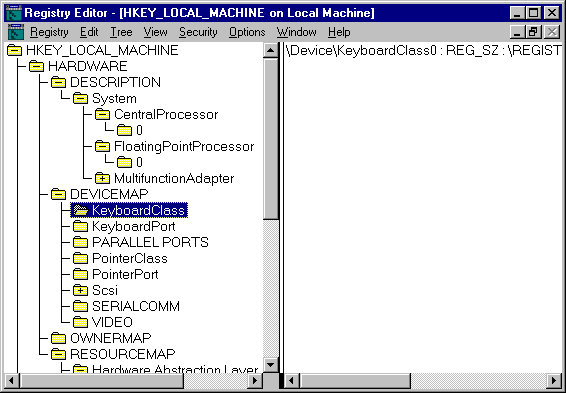
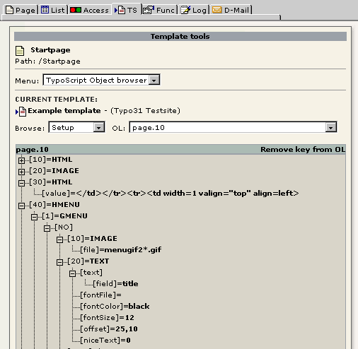
TS has a certain resemblance with JavaScript in the syntax, but you must really take the time to explore the few important rules of the syntax. It's very simple.
Here is an example of TypoScript:
temp.topmenu = HMENU
temp.topmenu.entryLevel = 1
temp.topmenu.1 = GMENU
temp.topmenu.1.target = content
temp.topmenu.1.NO {
XY = [10.w]+12,20
backColor = {$bgCol}
wrap = |*| || || || | <br> |*|
10 = TEXT
10.text.field = title
10.fontFile = media/fonts/hatten.ttf
10.fontSize = 16
10.fontColor = {$menuCol1}
10.offset = 6,14
10.niceText = 1
10.emboss.offset = 1,1
10.emboss.lowColor = white
10.emboss.highColor = black
10.emboss.blur = 40
10.emboss.opacity = 40
}
temp.topmenu.1.RO < temp.topmenu.1.NO
temp.topmenu.1.RO = 1
temp.topmenu.1.RO {
10.emboss.offset = -1,-1
}
This piece of code defines an object "temp.topmenu" which generates a navigation menu for the www.typo3.com website (the topmenu).
temp.topmenu is a content-object of the type "HMENU". Content-objects usually return some HTML content like in this case the HTML-code for site navigation. "HMENU" stands for "hierarchical menu" and this content object is designed to create menus you can put on the website. Here the HMENU has an "entryLevel = 1". This means that the menu consists of pages on the first level (zero being the root-level!) of the page-tree on this website. Now the first level of the menu is defined to be a "GMENU". This is a graphical menu. The target for the menu is "content". This refers the toplevel-object which contains the configuration of the content-frame. The actual frame on the website will also be named "content" by the way...
The next thing that happens is that NO is defined for the GMENU. NO stands for normal. This means that the following configuration is for the buttons when in normal mode (if not mouseover and such stuff...). NO is an GIFBUILDER-object. You cannot see this directly from this piece of code but you can see it in this documentation if you look at the GMENU-object. There you'll see that NO is always a GIFBUILDER-object. You cannot change this!
Next an object inside GIFBUILDER is defined (a GifBuilderObj) on position 10 of an array in this object. The GifBuilderObj is of type "TEXT". The actual text is defined by the object-property "text". Here we could just assign a value like "10.text = some text!" but we need the title of the page from the database. As the text-property has properties from the stdWrap function we import the value of field "title" from the page-record for this particular menuitem.
Now the fontfile, fontsize and fontcolor is defined. Fontcolor is also defined to be a constant. Again this adds the flexibility of easily changing this value from the constant-field of the templatesetup and not directly in TypoScript. "offset" is used to move the text 6 pixels down and 14 pixels to the right on the gif-file. "emboss" adds the embossed effect to the text.
The GIFBUILDER-object is very exciting. Here the dimensions (XY) of the gif-images is defined to be a height of 20 pixels and a width of the text on the gif + 12 pixels. In this way the width differs depending on the text upon it! The background color of the gif-file (backColor) is set to a constant, bgCol, which is the global background color on the website!! This is very clever as a change of this global value will also change the background color of the gif-files! Then a "wrap" is defined. A wrap means a value which is split in halfs by the |-character (vertical line). The first and second parts is placed around something. This kind of wrap is a bit crazy as it puts a <BR>-tag behind every fourth of the menu-gifs!
Now the normal-state part of the menu is finished:
The next thing is that we would really like to add mouse-over effects to the buttons. So the next piece of TypoScript-code is added:
temp.topmenu.1.RO < temp.topmenu.1.NO
temp.topmenu.1.RO = 1
temp.topmenu.1.RO {
10.emboss.offset = -1,-1
}
"RO" stands for roll-over, so this is the configuration of the gif-images when the mouse is moved over them.
Here the NO property of GMENU is copied to the RO property of GMENU!! But as RO is optional (NO was required), we must enable it by setting RO = 1. The next is that a single property inside the GIFBUILDER-object is overridden, the emboss-offset is set to "-1,-1". Everything else is just like the normal version of the menu.
Thus the buttons is kind off "pressed" when you move the mouse over them!:
You can see this menu on www.typo3.com.
The location of any script refered to in this manual is in the "tslib/"-dir in the regular Typo3-distributions. The Typo3 CMS/TypoScript frontend consists of code from this library.
A mountpoint is a page which - for the next level - points to another page. See this image:
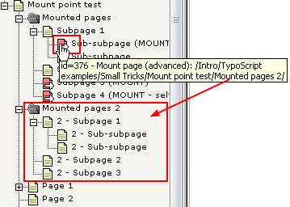
Here a menu for the page “Sub-subpage (MOUNT...)” (the one with the mousecursor over) will display the subpages found in the sysFolder “Mounted pages 2”. When clicking any of these pages the pages displayed will look to the frontend as if they were really subpages to the “Sub-subpage (MOUNT...” instead of “Mounted pages 2”. The ways this is done is by sending an additional parameter with the id to the index.php script. This parameter tells the system that when the “Mounted pages 2” pages is found in the rootLine it should be substituted with the “Sub-subpage (MOUNT...” page and continue the decent in the rootline from there.
When making this kind of feature there are two things to consider.
- Reading from the root of the page tree and outwards: No problem, when we discover a mountpoint, we could simply read on from the other page! However we must check that we do not end up in an eternal look if a mountpoint points to itself.
- Reading from the branch and inwards: Problem: We will by default get the rootline where the page is really mounted. But in many cases we would need the rootline of the mount instead! Therefore we must add a variable so the frontend KNOWS that this page id is supposed to be found in another rootline.
The solution is the get-var called &MP. If you have a page (id=1) which is a mountpoint to another page (id=2), then if you want to see the page with id 2 (or any other page inside of this) as mounted from the rootline of page with id 1, then you must call the page with &id=2&MP=2-1.
The problem is that most of the default linking mechanisms in Typo3 does not recognize the MP variable. Only does HMENU links. They are programmed to do that because it is thought that the typical use of mount points is with menus where you want to share some pages between sites in a system while using various templates.
So:
- only HMENU currently offers support for linking which observes mountpoints
- if you retrieve a list of id-numbers from a certain page and outwards in the tree, you will NOT get the ids of the mounted branch but rather the real id's of any subpages. (This is because support for this is not yet implemented if ever. Further implementation requires a check for recursiveness which makes it little more complex.)
Remember, TypoScript is like the Windows Registry. It is values arranged in a hierarchy. The "branches" are indicated with periods - like objects in JavaScript. But remember, just because JavaScript was an inspiration, TypoScript is not anyway near the same.
Objects: Sometimes we refer to something being an "object". If we're talking about a "menu-object" or "contentObject" it's related to a specific function, but generally a TypoScript "object" is a value with properties.
myObject = [value 1] myObject.myProperty = [value 2] myObject.myProperty.firstProperty = [value 3] myObject.myProperty.secondProperty = [value 4]
Refering to "myObject" we might call it an "object with the value [value 1] and the property, 'myProperty' with the value [value 2]. Furthermore 'myPropery' has its own two properties, 'firstProperty' and 'secondProperty' with a value each ([value 3] and [value 4])."
We might even call 'myProperty' for a TypoScript object in this example!
OK?
Remember, TypoScript is not "executed" like JavaScript and therefore doesn't report any errors if you specify non-existing objects or non-existing properties. Whether or not something happends depends on whether or not you have specified the correct properties to the correct objects. And which "correct objects" there is - that's what this reference is all about. The combinations.
Anyway the TypoScript above looks like this in a node-tree:
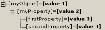
The TypoScript syntax applies to both the "Setup" and "Constants" field of the template records.
In the "Setup"-field the TypoScript is "executed" - that is the TypoScript hierarchy is traversed and your definition of objects and values will result in some output - but the TypoScript in the "Constants" field just results in a hierarchy of values where each value may represent an inserted constant in the "Setup" field which is substituted before the template configuration is cached.
About this mechanism (constants), see later in this document.
TypoScript is parsed in a VERY simple way: All lines are devided and parsed (In PHP: exploded into an array).
The first block of characters on a line - that is every character until a "=<>{} "-character (space included) is met - is seen as the object reference. Use only A-Z, a-z, 0-9, "-", "_" and periods (.). This is stricly checked in TypoScript ver2 (comes with Typo3.2+).
Ex: Here myObject is defined as a HTML-content-object and the property "value" is set:
myObject = HTML myObject.value = <BLINK> HTML - code </BLINK>
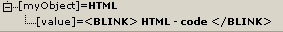
...then it's considered a comment.
Ex:
// This is a comment / This is also a comment (only ONE slash is needed) myObject = HTML myObject.value = <BLINK> HTML - code </BLINK> # This line is also a comment.
... it defines the beginning and the end of a comment section respectively. Anything within a comment section is ignored. Notice these codes, /* and */ MUST be the very first characters of a trimmed line in order to be detected. Comments are not detected inside a multiline value parenthesis.
Ex:
/* This is a comment
.. and this line is within that comment which...
ends here:
*/ ... this is not parsed either though - the whole line is still within the comment
myObject = HTML
myObject.value (
Here's a multiline value which
/*
ignores comments in side, so this is parsed!
*/
)
assigns a value to a property. Everything after the "="-sign and to the end of the line is considered to be the value. In other words: You don't need to quote anything! Please be aware that the value will be trimmed - stripped for whitespace in both ends.
(opening/closing braces) means, that you can assign many object-properties a simple way at once. It's called a confinement.
Ex:
myObject = HTML myObject.value = <BLINK> HTML - code </BLINK>
...is the same as:
myObject = HTML
myObject {
value = <BLINK> HTML - code </BLINK>
}
Everything on the second line that comes after "{" is ignored
The "}"-sign must be the first non-space character on a line in order to finish the confinement. Everything after "}" is ignored.
NOTE: You cannot use conditions inside of braces.
NOTE: Excessive endbraces are ignored, but issues a warning
(opening/closing parenthesis) means, that you can assign a multiline value.
Ex:
myObject = HTML
myObject.value (
<BLINK>
HTML - code
</BLINK>
)
NOTE: The end-parenthesis is extremely important as if it is not found, the parser does not return to parsing TypoScript. So don't miss it!
is used to copy one object to another. The whole object is copied - both value and properties - and it overrides any old objects and values at that position.
Ex.
myObject = HTML myObject.value = <BLINK> HTML - code </BLINK> myOtherObject < myObject
In this case you have two independent objects exactly the same. They are not references to each other but actually copies.
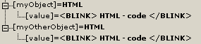
Another
example:
pageObj {
10 = HTML
10.value = <BLINK> HTML - code </BLINK>
20 < pageObj.10
}
Here you also make a copy of an object. The object is refered to from the root. You can also use a notation where the object is referenced from the same level. In this case you just write the object but adds a period before it in order to denote they are on the same level
This is equal to the above example:
pageObj {
10 = HTML
10.value = <BLINK> HTML - code </BLINK>
20 <.10
}
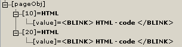
NOTE: From ver2 of TypoScript the original object is totally wiped out at copying.
This is used to unset an object.
Ex.
myObject = HTML myObject.value = <BLINK> HTML - code </BLINK> myObject >
In this last line myObject is totally wiped out.
There are a possibility of using conditions in TypoScript. Conditions is a simple kind of control structure, that validates true or false based on some criteria. The outcome of the validation determines whether or not, the following TypoScript code should be parsed or not.
Note: Conditions can be used outside of braces only! That means this is not valid:
someObject {
1property = 234
[browser=netscape]
2property = 567
}
Note: Condition does not necessarily apply to all uses of TypoScript. For instance the TypoScript style configuration for backend users does not use conditions. However most other does including the most prevalent use; frontend templates (which is what this document is about...)
Note: The special [global] (or [GLOBAL]) condition will at anytime break TypoScript parsing within braces and return to the global scope. This is true for any TypoScript implementation whether other condition types are possible or not. Therefore use [GLOBAL] (put on a single line for itself) to make sure that preceeding TypoScript is correctly parsed from the top level.
A condition has it's own line and looks like this:
(Some TypoScript) [ condition 1 ][ condition 2] (Some TypoScript only parsed if cond. 1 or cond. 2 are met) [GLOBAL] (Some TypoScript)
Now, if condition 1 or 2 is met, then the TypoScript in the middle would be parsed until [GLOBAL] (or [END]) resets the conditions and parses the TypoScript for everybody.
Here is an example of some TypoScript where another text is output if you use Netscape instead of Internet Explorer or use Windows NT:
pageObj.10 = HTML
pageObj.10.value = Hello World
pageObj.10.value.case = upper
[browser = netscape][system = WinNT]
pageObj.20 = HTML
pageObj.20 {
value = Hello Netscape or Windows NT users!!
value.case = upper
}
[GLOBAL]
pageObj.30 = HTML
pageObj.30.value = <HR>
Note: Conditions can be used in the global space ONLY!
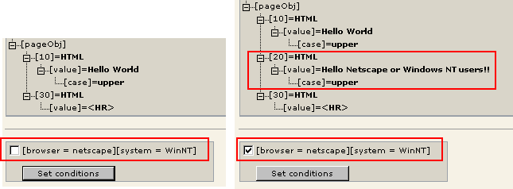
There's a special condition called [else] which will return true if the previous condition returned false. In this context the condition [end] is better understood as being an alias to [global] which returns us to the global scape.
Here's an example of using the [else]-condition:
page.typeNum=0 page = PAGE page.10 = TEXT [browser=netscape] page.10.value = Netscape [else] page.10.value = Not a netscape browser! [end] page.10.wrap = <B>|</B>
Here we have one output text if the browser is netscape and another if not. Anyways the text is wrapped by <B>|</B> as we see, because this wrap is added after the [end]-condition.
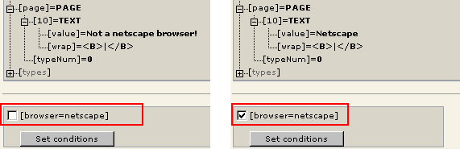
The fact that you can "enable" the condition in the TypoScript Object Browser is a facility provided to "test" the outcome of any conditions, you insert in the script. Whether or not the conditions correctly validate is only verified by actually getting a (in this example) Netscape browser and hit the site
Another example could be if you wanted to do something special in case a bunch of conditions is NOT true. There's no negate-character, but you could do this:
[browser=netscape][usergroup=3] # Enter nothing here! [else] page.10.value = This text displays only if the conditions above are not true! [end]
You can also add include-instructions in TypoScript code. Availability depends on the context, but it works with TypoScript templates, Page TSconfig and User TSconfig.
An include-instruction looks like this:
<INCLUDE_TYPOSCRIPT: source="FILE: fileadmin/html/mainmenu_typoscript.txt">
It must have it's own line in the TypoScript template, otherwise it's not recognized.
It is processed BEFORE any parsing of TypoScript (contrary to conditions) and therefore does not care about the nesting within the TypoScript code.
The “source” parameter points to the source of the included content. The string before the first “:” (in the example it is the word “FILE”) will determine which source the content is coming from. This is the options:
|
FILE |
A reference to a file relative to PATH_site. Must be lest than 100 KB. Cannot contain “..”. If you prefix the relative path with such as “EXT:myext/directory/file.txt” then the file included will be sought for in the extension directory of extension “myext”, subdirectory “directory/file.txt”. |
If there's a bug in your TypoScript then you'll know only by the fact that the desired result didn't appear. Any wrong configuration is simply ignored. This can lead to problems because the error is not discovered and therefore it's hard to find.
Your help in the misery is basically the TypoScript Object Browser (see screenshots from above). But you can also set ".debug..." properties for a few objects like stdWrap (.debug, .debugFunc, .debugData) and the menuobjects, GMENU, TMENU, IMGMENU.
You can put comments anywhere in your TypoScripts. Comments are always ignored by the parser when the template is processed. But the backend module Web>TS has the ability to utilize comments in a constant-editor that makes simple configuration of a template even easier than constants in them selves make it.
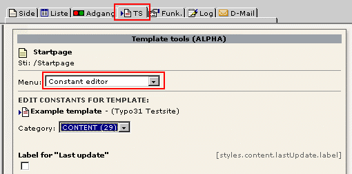
When the TS "Constant Editor" parses the template, all comments before every constant-definition is registeret. In the constants you can follow a certain syntax to define what category the constant should be in, which type it has and what explaination there is about the constant. This is an example:
styles.content.textStyle {
# cat=content/cText/1; type=; label= Bodytext font: This is the fontface used for text!
face =
# cat=content/cText/2; type=int[1-5]; label= Bodytext size
size =
# cat=content/cText/3; type=color; label= Bodytext color
color =
color1 =
color2 =
properties =
}
It's totally optional to make the comments before your constants compliant with this system, but it's very useful lateron if you want others to make simple corrections to your template or distribute the template in a template-archive or such.
The default value of a constant is determined by the value the constant has BEFORE the last template (the one you're manipulating with the module) is parsed (previous templates are typically included static_template-records!), unless the mark ###MOD_TS:EDITABLE_CONSTANTS### is found in the last template, in which case constant-definitions before this mark is also regarded default-values.
This means that all constant values - or values after the mark ###MOD_TS:EDITABLE_CONSTANTS### if present - in the template-record you're manipulating is regarded to be your customized extensions.
How the comments are percieved by the module:
- All comments set on lines before the constant whereever it's found in the templates are parsed sequentially.
- Each line is split by the ";" (semicolon) character, that separates the various parameters
- Each parameter is split by the "=" (equal) sign to separate the parameter "key" and the "value".
cat=
- Comma-separated list of the categories (caseinsensitive) that the constant is a member of. You should list only one category, because it usually turns out to be confusing for users, if a constant appears in multiple categories!
- If category is not found among the default categories listed below, it's regarded a new category
- If the category is empty (""), the constant is excluded by the editor!
basic: Constants of superior importance for the template-layout. This is dimensions, imagefiles and enabling of various features. The most basic constants, which you would almost always want to configure. menu: Menu setup. This includes fontfiles, sizes, background images. Depending on the menutype. content: All constants related to the display of pagecontent elements page: General configuration like metatags, link targets advanced: Advanced functions, which are used very seldomly.
There are a number of subcategories to use. Subcategories are entered after the category-name separated by a slash "/". Example: "basic/color/a"
This will make the constant go into the "BASIC"-category, be listed under the "COLOR"-section and probably be one of the top-constants listed, because the "a" is used to sort the constants in a subcategory. If "a" was not entered, the default is "z" and thus it would be one of the last colors to select. As the third parameter here, you can choose whatever you like.
Subcategories must be one of these. If not, it'll not be create as it's the case with categories, but the constant will just go into the subegory "Other".
Here is the current subcategories
Standard subcategories (in the order listed in Typo3):
enable Used for options that enable or disable primary functions of a template dims Dimensions of all kinds; pixels, widths, heights of images, frames, cells and so on. file Files like background images, fonts and so on. Other options related to the file may also enter typo Typography and related constants color Color setup. Many colors will be found with related options in other categories though. links Links: Targets typically language Language specific options.
Subcategories based on the default content elements
cheader,cheader_g,ctext,ctextpic,cimage,cbullets,ctable,cuploads,cmultimedia,cmailform,csearch,clogin,csplash,cmenu,cshortcut,clist,cscript,chtml
These are all categories reserved for options that relate to content rendering for each type of tt_content element. See static_template "content (default)" and "styles.content (default)" for examples.
int [low-high] integer, opt. in range "low" to "high" int+ positive integer offset [L1,L2,...L6] comma-separated integers. Default is “x,y”, but as comma separated parameters in brackets you can specify up to 6 labels being comma separated! If you wish to omit one of the last 4 fields, just don't enter a label for that element. color HTML color wrap HTML-code that is wrapped around some content. options [item1,item2,...] Selectbox with values/labels item1, item2 etc. Commaseparated. Split by "=" also and in that case, first part is label, second is value boolean [truevalue] Boolean, opt. you can define the value of "true", def.=1 comment Boolean, checked= "", not-checked = "#". file [ext-list/IMAGE_EXT] Selectorbox with resources. Opt. list allowed extensions (no space in list!), eg. "[ttf]" or "[txt,html,htm]". You can also enter "[IMAGE_EXT]" in which case the default image-extensions are listed. (used for datatype "imgResouce") string (the default) Just a string value
- Textstring. trimmed.
- Split by "|" to indicate language, following the default sequence of languages in Typo3 (see typo3/lang/).
- Split by the first ":" to separate a header and body of the comment. Header is displayed on it's own line in bold.
In addition to using constants, you can also configure a category in the constant editor by a special toplevel TypoScript "object" in the constants-field. The name is "TSConstantEditor" and any properties to this object will NOT be substituted like any other constant normally would.
|
Property: |
Data type: |
Description: |
Default: |
|---|---|---|---|
|
header |
string |
Header, displayed in upper-case |
|
|
description |
string, break by // |
Description, enter "//" to make a linebreak |
|
|
bulletlist |
string, break by // |
Lines for a bulletlist, enter "//" (double-slash) in order to break to next bullet |
|
|
image |
image |
This is an optional image you can attach to the category. The image would normally show a given configuration of the template and contain numberet marks, that indicate positions that are referred to by the constants, listed in the number-array. The image must be located in "gfx/" in the module path OR be a file from the resource-list of the template. |
|
|
Array, 1-20 |
list of constant-names |
Each number refers to a number-mark on the image and all constants that are listed at each number will get a little number-icon by it's header. |
|
## TSConstantsEditor Config
TSConstantEditor.basic {
header = Standard Template "BUSINESS"
description = BUSINESS is a framebased template in a very simple layout, based on ....
bulletlist = Left-frame image in the top. The dimensions are fixed to ....
image = gfx/BUSINESS_basic.gif
1=leftFrameWidth,menu.file.bgImg,menu.bgCol
2=page.file.bgImg,bgCol
3=contentOffset
4=file.logo
5=page.L0.titleWrap
6=page.L1.titleWrap
7=contentWidth,styles.content.imgtext.maxW
8=page.lineCol
}
This example shows how the static_template BUSINESS is configured for the basic-module. This is how it looks in Typo3:
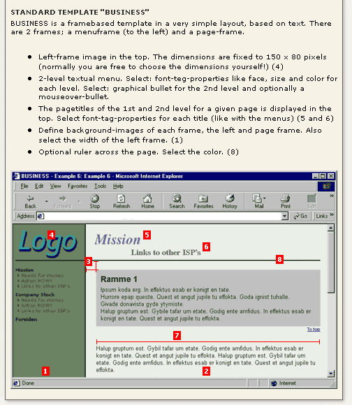
The template system is built in a way so that a new website can actually start from whatever page in the tree! The starting point - or frontpage - is in this context called rootlevel.
If a template is meant to define the looks of a website from the rootlevel and outwards, then "Rootlevel" must be checked. Normally you would also check the fields "Clear constants and setup". By this operation every value from earlier in the tree is cleared.
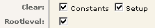
But you can also place a template in a branch of your website. That template would by default work as an extension to templates from earlier in the tree.
Such an extension could be used to change the color of the menu if one has entered the sales-part of a website.
A really cool feature of Typo3's templates is that they can include a bunch of standard-templates (static templates) which follows Typo3 CMS as standard. These templates comes from the table "static_template" and reside in the root of the page-tree. You must have administrator access in order to view these static templates.
Including a static template means that they will be the first thing parsed at all. Typically such templates hold some standard-setup like framesets, menus or content-formatting.
Another really cool feature of Typo3's templates is that they can be based on other templates you make yourself.
Basing a template on other templates means that these other templates will be parsed after included standard-templates but before the current template.
In the template of the actual website you can then make customizations to these basis-templates.
This options is available in the palette if you click the field “Include static” or “Based On”. The point of this is to let you choose whether to include the static template before or after the inclusion of any “Based On” template. You would like to do that if you for instance wants to add meta-tags with the static template “plugin.meta” record.
See this picture:
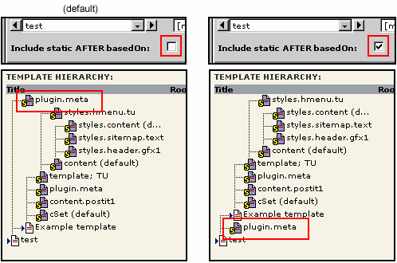
This function makes it possible to pick a template that will be loaded for every page on the next level of this actual template. This is smart when you want to make a frontpage in one layout and subpages in another layout depending on the content of the "next"-template
The technical implementation of the templates in PHP is so when the required templates are found, the setup and constants-field are textually concatenated and divided by a [GLOBAL]-tag in order to ensure resetting to the global scope between each template.
Afterwards the data from the constant-field is parsed. Thus all constants are known. Now a string-replace operation is performed in the setup-data in order to substitute constants. Now the setup-data is parsed.
Parsing TypoScript means that a script is converted into a PHP-array that reflects the structure of TypoScript. This can best be shown by an example:
TypoScript:
pageObj.20 = HTML
pageObj.20 {
value = Hello Netscape or Windows NT users!!
value.case = upper
}
PHP Array:
$setup["pageObj."]["20"] = "HTML";
$setup["pageObj."]["20."]["value"] = "Hello Netscape or Windows NT users!!";
$setup["pageObj."]["20."]["value."]["case"] = "upper";
When a TypoScript is parsed and loaded into an array, then information about 1) all the conditions there has been in TypoScript and 2) all of these conditions that were met is collected. This information together with data about other things is converted to an md5-hash which are the unique identification of this template.
The template is serialized and saved in a cache-table in SQL.
The next time this template is requested - the conditions taken into account - then you get template as an array from the template cache-table. Thereby the template does not need the be parsed once again.
"Rootline" is a term used for the line of pages from somewhere in the treestructure to the root of the website. On this illustration you can see it quite clearly. To the left is a "print" of the rootline, when the page "Experience..." was hit. It was printed with this line of code from "pagegen.php".
debug($GLOBALS["TSFE"]->tmpl->rootLine);
With PHP you can reach the title of the page on the second level by this reference:
$GLOBALS["TSFE"]->tmpl->rootLine[1]["title"]
With TypoScript you can do it by the stdWrap-function (".data"-property and "getText"-datatype)
.data = leveltitle : 1
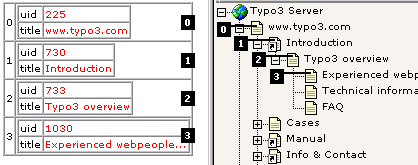
IMPORTANT: Please notice, that the rootLine will always start over from zero when the "Rootlevel" checkbox is set in a template!
Two kinds of rootline:
In the array $GLOBALS["TSFE"]->rootLine you have the rootline all the way to the pagetree root (that is PID=0). In the array $GLOBALS["TSFE"]->config["rootLine"] you have only the rootline of the current site (which is what was described above). $GLOBALS["TSFE"]->config["rootLine"] is the same as $GLOBALS["TSFE"]->tmpl->rootLine.
Currently the rootline array holds the uid, title, media and layout field of the page-records represented in the rootline array (the image above displays only title and uid)
The Admin Panel (admPanel) is a tool you can insert in the bottom of the front-end pages. It provides access to backend like function, which are all related specifically to the front-end. For most users the destinction between frontend and backend concepts may blur out, but because Typo3 may be used for other non-CMS purposes, these functions are not included in the backend module. Well, some of them are and in that case: Just regard the panel as a mini-backend in the frontend!
You must configure the panel for each backend user/group. For instructions, please see the admin guide document.
From TypoScript you must do one important thing though: Enable the display of the panel. In the config-object of the templates/PAGE-objects, you can enable it by setting “admPanel” true. Example:
page.config.admPanel = 1
This enables the panel to be displayed on the 'page' PAGE-object frame (which is normally used for plain content). You would probably not want the panel to go to eg. a menu frame which is why you don't enable it by “config.admPanel=1” which would enable it globally for all frames.
NOTE: The panel will only display if the backend user has it enabled as well!
The Publish-module allows to you write the pages to static html. You must configure a path in TYPO3_CONF_VARS[“FE”][“publish_dir”].
Enable “simulateStaticDocuments”
You should enable “simulateStaticDocuments” when publishing because then the links on the pages will point to “[id].[type].html” instead of “index.php?id=....”. The files written are namely named by the same conventions as used with “simulateStaticDocuments”
If you decide to publish to the same dir as the real dynamic site, you can do that. Using “simulateStaticDocuments” you can modify your .htaccess file so that the static files are served in case they exist - if not the dynamic page. This is extremely cool because the dynamic/static pages will exist side-by-side transparently.
Use this in .htaccess:
RewriteEngine On
RewriteCond %{REQUEST_FILENAME} !-f
RewriteRule ^[^/]*\.html$ index.php